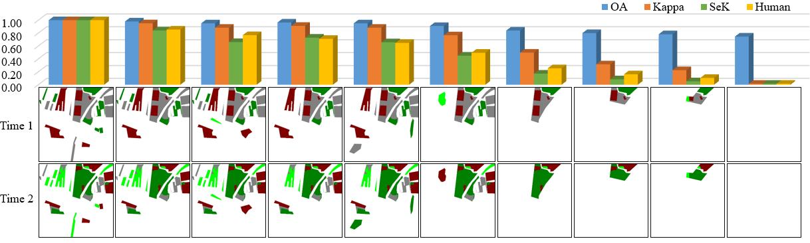

3. Evaluation Metirc
In order to alleviate the influence of label imbalance, we utilize Mean Intersection Over Union (mIOU) to evaluate BCD results and propose a Separate Kappa (SeK) coefficient to evaluate SCD results.
- Mean Intersection Over Union
Specifically, given a confusion matrix Q, we define categorical IOU and mIOU as :
Categorical IOU measure the identification of non-change pixels and evaluates the extraction of changed regions. Compared with Overall Accuracy (OA), mIOU considers more about changed regions.
- Separate Kappa
On the other hand, the true positive of non-change pixels `q_{11}` always dominates the calculation of Kappa. Thus, we separate `q_{11}` in the calculation of SeK. We also utilize categorical IOU to further emphasize changed pixels.
Specifically, we define
where the exponential form enlarges the discernibility compared with simple multiplication for better models. We collect visual scores between 0 and 1 `w.r.t.`each result from 11 remote sensing image interpretation experts. As illustrated in the following figure, compared with Kappa and OA, models with apparently poor performances on small change categories would get low scores in SeK no matter how good the performances on BCD are. Moreover, the Mean Square Error (MSE) between SeK and human scores is 0.003. While, MSE `w.r.t.`OA and Kappa are 0.212 and 0.028 respectively, which further validates the rationality of SeK.

Fig.2 Given a change detection data sample, i.e. a pair of images and a sequence of change detection results, we collect visual scores between 0 and 1 w.r.t. each result from 11 remote sensing image interpretation experts. Meanwhile, we calculate evaluation scores of each result based on OA and Kappa. Compared with OA and Kappa, SeK is more in line with human scoring in SCD problem.
4. Experiment Analyses
The change detection algorithms involved in the comparison experiments are as follows:
- FC-EF: a BCD algorithm using single encoder-decoder structure.
- FC-conc: a BCD algorithm using siamese encoders followed with single decoder branch and concatenation skip connections from the encoder to the decoder.
- FC-diff: a BCD algorithm using siamese encoders followed with single decoder branch and difference skip connections from the encoder to the decoder.
- HRSCD.str1: an algorithm corresponding to the intuitive solution to SCD problem through direct application of semantic segmentation.
- HRSCD.str2: a SCD algorithm using single encoder-decoder structure.
- HRSCD.str3: a SCD algorithm using siamese semantic segmentation branches with change detection branch.
- HRSCD.str4: a SCD algorithm using siamese semantic segmentation branches with change detection branch and difference skip connections from siamese encoders to the decoder of change detection branch.
In the training process, SGD is utilized to search optimal parameters for 50 epochs. Random flip and random scale between 0.5 and 2 are utilized as the data augmentation.
The initial learning rate is set as 0.005 and 'poly' policy is employed with the power of 0.9. Also, the momentum is set as 0.9 and weight decay is set as 0.0001.
In the testing process, we apply flip strategy and multi-scale (MS) testing with 6 scales which are 0.5, 0.75, 1.0, 1.25, 1.5 and 1.75. Batch size is set as 4. All the models are trained from scratch without post-processings.
- Evaluation and visual results when the encoder is built on residual blocks.
Comparison with state-of-the-art methods when the encoder is built on residual blocks.
Visual results of comparison with state-of-the-art method when the encoder is built on residual blocks. We mask the semantic maps with change maps to represent the prediction of change category in each position, where our proposed ASN can better identify land-cover categories and alleviate false identifications of non-change pixels.
- Detail comparsion results when the encoder is built on residual blocks.
Detail categorical results with three kinds of testing strategies when the encoder is built on residual blocks. Top sheets are without testing strategy. Middle sheets are with MS testing strategy. Bottom sheets are with MS and Flip testing strategy. The categorical SeK is listed in the matrices, while the categorical intersection over union (IOU_1,IOU_2) of binary change detection is listed below each matrices.
- Visult results on mentioned asymmetric changes.
Result visualizations of the case discussed in our paper when the encoder is built on residual blocks. ASN can extract changed regions and identify change categories more precisely, while addressing these asymmetric changes.
More details can be found in the paper.